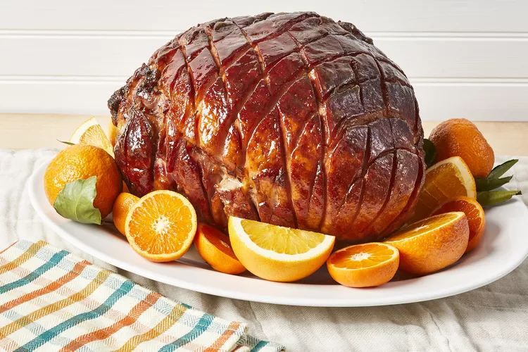

Tangy Honey-Glazed Ham

Description
This honey-glazed ham recipe makes it easy to create a showstopping entree without the fuss.
You'll find the full recipe below with step-by-step instructions, but here's what you can expect
when you make this top-rated recipe: Start by placing an uncovered ham in a roasting pan.
Cook the ham at 325 degrees F for two hours. Remove ham from the oven for glazing.
Ingedients
- 1 (10 pound) fully-cooked, bone-in ham
- 1 ¼ cups packed dark brown sugar
- ⅓ cup pineapple juice
- ⅓ cup honey, or more to taste
- ⅓ large orange
- 2 tablespoons Dijon mustard
- ¼ teaspoon ground cloves
- 1 ½ teaspoons lemon juice, or to taste (Optional)
Steps
- Preheat the oven to 325 degrees F (165 degrees C). Place ham in a roasting pan.
- Bake ham, uncovered, in the preheated oven for 2 hours.
- While the ham is baking, combine brown sugar, pineapple juice, and 1/3 cup honey
in a saucepan. Zest orange into the saucepan, then squeeze in the juice. Add Dijon mustard
and ground cloves; whisk mixture over medium-high heat as it comes to a boil. Reduce heat
and simmer until glaze thickens slightly, 5 to 10 minutes.
- Taste glaze and adjust seasonings. Add lemon juice for more tang, or honey to make it sweeter. Set aside.
- Remove ham from the oven after it has baked for 2 hours. Brush with glaze. Bake for an additional
30 to 45 minutes, brushing ham with glaze every 10 minutes.